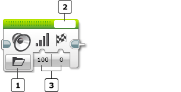
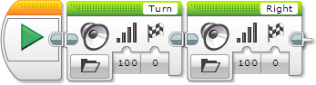
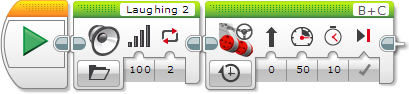
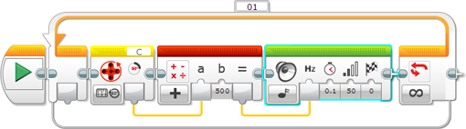
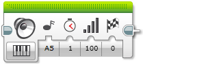
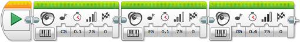

					<table cellpadding="0" cellspacing="0" border="0"><tbody><tr><td>
	
						<h1>声音模块<a name="top"></a></h1>
		<div id="block_295" class="block blockHeader">
				<table cellspacing="0" cellpadding="0" border="0">
			<tbody><tr>
				<td valign="top" class="image"></td>
				<td valign="top" class="description"><div class="text-wrapper">声音模块使用 EV3 程序块中的扬声器发出声音。可以播放预先录制的声音文件或是指定音符或音调。</div></td>
			</tr>
		</tbody></table>
			</div>
	<div id="block_296" class="block blockChaptor">
		<div class="title"><a name="ChooseTheSoundMode" style="position:relative; top:-10px;"></a>选择声音模式</div>
		<div class="description"><br>
<br>
 模式选择器<br>
 “文件名称”输入 <br>
 输入<br>
<br>
使用模式选择器选择要发出的声音类型。选择模式之后，可以为输入选择值。可用输入会因模式而异。下面介绍了模式和输入。</div>
			<div class="links">模式：<a href="./index.html?id=Sound#Mode_File">播放文件</a>、<a href="./index.html?id=Sound#Mode_Tone">播放音调</a>、<a href="./index.html?id=Sound#Mode_Note">播放音符</a>、<a href="./index.html?id=Sound#Mode_Stop">停止</a></div>
	</div>
	<div id="block_297" class="block blockChaptor">
		<div class="title">模式</div>
		<div class="description"></div>
	</div>
	<div id="block_298" class="block blockMode">
		<div class="title"><a name="Mode_File" style="position:relative; top:-10px;"></a>播放文件</div>
		<div class="description">“播放文件”模式播放预先录制的声音文件。<br>
<br>
<a href="./index.html?id=Sound#Name">文件名称</a>输入位于模块顶部。它使您可以从声音效果、口头词语和短语列表中进行选择。“LEGO 声音”类别中的声音是随 EV3 软件包含的声音文件。“项目声音”类别中列出的声音是已在项目中使用的声音。这样可以在程序或项目中方便地多次使用相同声音。 <br>
<br>
如果从模块顶部的<a href="./index.html?id=Sound#Name">文件名称</a>输入中选择“连线”，则“文件名称”输入会出现在声音模块的输入区域中。这使您可以使用<a href="./index.html?id=DataWires">数据线</a>提供声音文件的名称。<br>
<br>
请注意，需要先通过在“文件名称”输入中选择声音文件，将该文件添加到项目。<br>
<br>
<a href="./index.html?id=Sound#Volume">音量</a>输入控制音量的高低程度。<br>
 <br>
<a href="./index.html?id=Sound#PlayType">播放类型</a>输入控制模块在程序继续执行下一个模块之前是否等待声音完成，以及是否重复声音。</div>
			<div class="links">使用的<a href="./index.html?id=Sound#Inputs">输入</a>：<a href="./index.html?id=Sound#Name">文件名称</a>、<a href="./index.html?id=Sound#Volume">音量</a>、<a href="./index.html?id=Sound#PlayType">播放类型</a></div>
	</div>
	<div id="block_299" class="block blockExample">
		<div class="title">示例 1</div>
		<div class="image"></div>
		<div class="description">此程序会通过播放两个不同声音文件并等待每个文件完成，使 EV3 程序块说出“Turn Right”。</div>
	</div>
	<div id="block_300" class="block blockTip">
		<div class="title">提示和技巧</div>
		<div class="boxContent">
			<div class="description">EV3 程序块只能播放存储在预先录制的声音文件中的口头词语声音。<a href="./index.html?id=Sound#Name">文件名称</a>输入中的文本必须为现有声音文件的名称。</div>
				</div>
	</div>
	<div id="block_302" class="block blockExample">
		<div class="title">示例 2</div>
		<div class="image"></div>
		<div class="description">此程序会在 10 秒内，使机器人向前驱动的同时发出连续的笑声。通过对<a href="./index.html?id=Sound#PlayType">播放类型</a>输入使用“重复”来实现此目的。</div>
	</div>
	<div id="block_303" class="block blockMode">
		<div class="title"><a name="Mode_Tone" style="position:relative; top:-10px;"></a>播放音调</div>
		<div class="description"><br>
<br>
“播放音调”模式播放指定频率的音调。音调的频率控制音高（换句话说，是声音的高低程度）。<br>
<br>
<a href="./index.html?id=Sound#Frequency">频率</a>输入以 Hz（循环/秒）为单位指定音调的频率。可以键入频率数字或从标准音符频率列表中选择频率。<br>
<br>
<a href="./index.html?id=Sound#Duration">持续时间</a>输入控制音调的持续时间长度（以秒为单位）。</div>
			<div class="links">使用的<a href="./index.html?id=Sound#Inputs">输入</a>：<a href="./index.html?id=Sound#Frequency">频率</a>、<a href="./index.html?id=Sound#Duration">持续时间</a>、<a href="./index.html?id=Sound#Volume">音量</a>、<a href="./index.html?id=Sound#PlayType">播放类型</a></div>
	</div>
	<div id="block_304" class="block blockTip">
		<div class="title">提示和技巧</div>
		<div class="boxContent">
			<div class="description">“播放音调”模式播放的音调的声音与<a href="./index.html?id=Sound#Note">播放音符</a>模式播放的音符相同，但是可以使用“播放音调”指定准确频率。</div>
				</div>
	</div>
	<div id="block_307" class="block blockStep">
		<div class="title"></div>
		<div class="description"><a href="./index.html?id=Sound#Volume">音量</a>输入控制音量的高低程度。 <br>
<br>
<a href="./index.html?id=Sound#PlayType">播放类型</a>输入控制模块在程序继续执行下一个模块之前是否等待声音完成，以及是否重复声音。</div>
			<div class="links">使用的<a href="./index.html?id=Sound#Inputs">输入</a>：<a href="./index.html?id=Sound#Frequency">频率</a>、<a href="./index.html?id=Sound#Duration">持续时间</a>、<a href="./index.html?id=Sound#Volume">音量</a>、<a href="./index.html?id=Sound#PlayType">播放类型</a></div>
	</div>
	<div id="block_306" class="block blockExample">
		<div class="title">示例</div>
		<div class="image"></div>
		<div class="description">此程序会基于电机转动传感器的位置，使音调频率发生变化。在手动转动电机时，音调会更改。</div>
	</div>
	<div id="block_308" class="block blockMode">
		<div class="title"><a name="Mode_Note" style="position:relative; top:-10px;"></a>播放音符</div>
		<div class="description"><br>
<br>
“播放音符”模式播放音符。<br>
<br>
<a href="./index.html?id=Sound#Note">音符</a>输入使您可以从钢琴键盘控件选择音符。<br>
<br>
<a href="./index.html?id=Sound#Duration">持续时间</a>输入控制音符的持续时间长度（以秒为单位）。</div>
			<div class="links">使用的<a href="./index.html?id=Sound#Inputs">输入</a>：<a href="./index.html?id=Sound#Note">音符</a>、<a href="./index.html?id=Sound#Duration">持续时间</a>、<a href="./index.html?id=Sound#Volume">音量</a>、<a href="./index.html?id=Sound#PlayType">播放类型</a></div>
	</div>
	<div id="block_309" class="block blockTip">
		<div class="title">提示和技巧</div>
		<div class="boxContent">
			<div class="description">可以在<a href="./index.html?id=Sound#Duration">持续时间</a>输入中使用小数点获取准确时间量（包括非常短的间隔）。例如，0.1 秒会将音符播放十分之一秒。</div>
				</div>
	</div>
	<div id="block_311" class="block blockStep">
		<div class="title"></div>
		<div class="description"><a href="./index.html?id=Sound#Volume">音量</a>输入控制音量的高低程度。 <br>
<br>
<a href="./index.html?id=Sound#PlayType">播放类型</a>输入控制模块在程序继续执行下一个模块之前是否等待声音完成，以及是否重复声音。</div>
			<div class="links">使用的<a href="./index.html?id=Sound#Inputs">输入</a>：<a href="./index.html?id=Sound#Note">音符</a>、<a href="./index.html?id=Sound#Duration">持续时间</a>、<a href="./index.html?id=Sound#Volume">音量</a>、<a href="./index.html?id=Sound#PlayType">播放类型</a></div>
	</div>
	<div id="block_312" class="block blockExample">
		<div class="title">示例</div>
		<div class="image"></div>
		<div class="description">此程序会通过播放三个不同音符来播放短曲调。</div>
	</div>
	<div id="block_626" class="block blockMode">
		<div class="title"><a name="Mode_Stop" style="position:relative; top:-10px;"></a>停止</div>
		<div class="description"><br>
<br>
“停止”模式会停止当前由 EV3 程序块播放的任何声音。这通常用于停止之前在程序中由声音模块启动的声音（不等待声音播放完）。</div>
	</div>
	<div id="block_627" class="block blockExample">
		<div class="title">示例</div>
		<div class="image"></div>
		<div class="description">此程序会播放某个音调，直至触动传感器受到按压，然后停止该音调。</div>
	</div>
	<div id="block_628" class="block blockChaptor">
		<div class="title"><a name="Inputs" style="position:relative; top:-10px;"></a>输入 <a name="Parameters" style="position:relative; top:-10px;"></a></div>
		<div class="description">声音模块的输入控制播放的声音的详细信息。可以将输入值直接输入到模块中。或者，可以通过<a href="./index.html?id=DataWires">数据线</a>从其他编程模块的输出提供值。</div>
	</div>
	<div id="block_629" class="block blockTable ">
		<table class="blockTable">
		

			<tbody><tr>
<th>输入</th><th>类型</th><th>允许的值</th><th>备注</th>			</tr>
<tr><td>文件名称 <a name="Name" style="position:relative; top:-10px;"></a></td><td>文本</td><td>现有声音文件的名称</td><td>（例如，“Laughing 2”）</td></tr><tr><td>音符 <a name="Note" style="position:relative; top:-10px;"></a></td><td>文本</td><td>“C”到“B”，后面可以选择跟随“#”，后跟“4”到“6”。</td><td>A-G 为音符名称。<br>
4-6 为八度音阶数字。<br>
“#”表示“升音”。<br>
<br>
示例：“C4”为标准钢琴上的“中央 C 音”，而“C#4”高半个音阶。</td></tr><tr><td>频率 <a name="Frequency" style="position:relative; top:-10px;"></a></td><td>数字</td><td>300 至 10000</td><td>音频（以 Hz 为单位）</td></tr><tr><td>持续时间 <a name="Duration" style="position:relative; top:-10px;"></a></td><td>数字</td><td>≥ 0</td><td>音符或音调的持续时间（以秒为单位）</td></tr><tr><td>音量 <a name="Volume" style="position:relative; top:-10px;"></a></td><td>数字</td><td>0 至 100</td><td>完整音量的百分比</td></tr><tr><td>播放类型 <a name="PlayType" style="position:relative; top:-10px;"></a></td><td>数字</td><td>0、1 或 2</td><td>0 = 等待完成：声音播放一次，程序等待声音完成，然后继续执行。<br>
<br>
1 = 播放一次：声音播放一次，程序会立即继续执行。<br>
<br>
2 = 重复：声音会连续重复至另一个声音模块执行，程序会立即继续执行。</td></tr>		</tbody></table>
	</div>
	<div id="block_1416" class="block blockTable ">
		<table class="blockTable">
		

			<tbody><tr>
<th>A-G</th><th>Do,Ré,Mi</th>			</tr>
<tr><td>C</td><td>Do</td></tr><tr><td>D</td><td>Ré</td></tr><tr><td>E</td><td>Mi</td></tr><tr><td>F</td><td>Fa</td></tr><tr><td>G</td><td>Sol</td></tr><tr><td>A</td><td>La</td></tr><tr><td>B</td><td>Si</td></tr>		</tbody></table>
	</div>
	
			<div id="quick">
				<div class="header"><a href="./index.html?id=Sound#header">声音</a></div>
					<div class="quickText">快速链接</div>
					
					<ul>
	<li><a href="./index.html?id=Sound#ChooseTheSoundMode">选择声音模式</a></li><li><a href="./index.html?id=Sound#Inputs">输入</a></li>					</ul>
			</div>
	
	</td></tr></tbody></table>